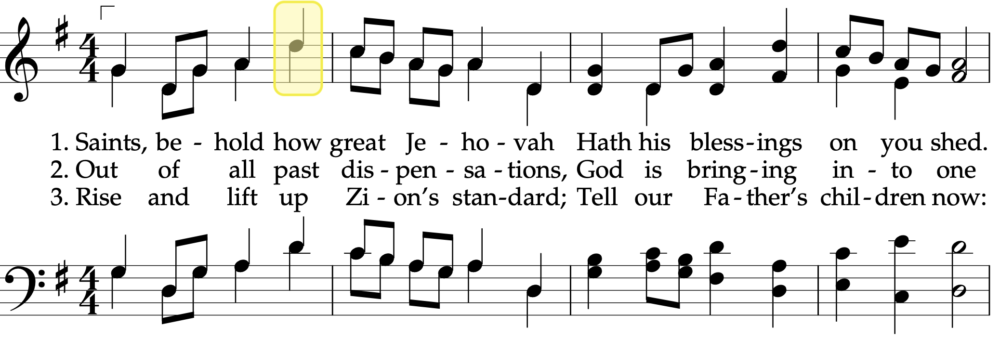
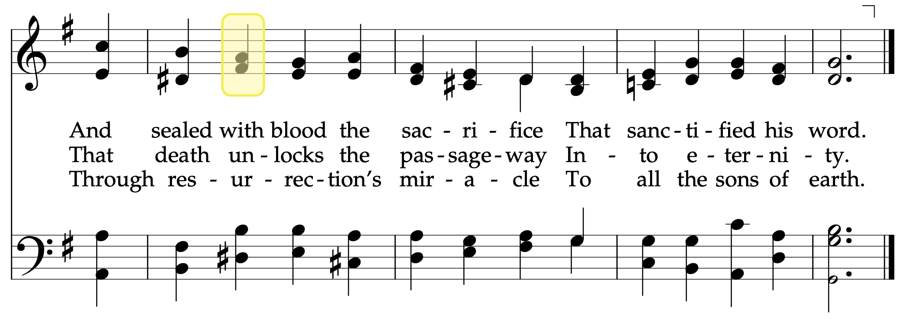

What are the highest notes in alto lines?
alto line
musicology
highest notes
Previously, I’ve discussed in depth the highest and lowest notes a soprano line is expected to go. In this post, I’ll explore the highest notes alto are expected to sing.
The highest alto notes
The first question is this: what is the highest note for an alto line? As it turns out, it depends on what you consider an alto line!
However, we may have to qualify those a little bit. In the first four hymns, the alto is in unison with the soprano. I think it’s noteworthy that the alto only goes that high if it’s singing the melody (i.e. the soprano line) in unison for whatever musical purposes the arranger intended. I’ll leave it up to you about whether you want to consider that a true “alto” line, but I think it’s worth mentioning that detail.
Click to see those hymns

The only other hymn that has an alto line that goes up to a D5 is in a really nice close harmony in the women’s arrangement of
Okay fine, so if we ignore alto lines that are in unison with sopranos and the women’s arrangements in the back of the book, the highest alto note is actually a C5, which is found in three hymns:
As it turns out, there are a six of other hymns that have alto notes going up to a C5, but it’s only when in unison with sopranos again. They are Saints, Behold How Great Jehovah (#28) , Rejoice, the Lord Is King! (#66) , Glory to God on High (#67) , God Speed the Right (#106) , O Thou Rock of Our Salvation (#258) , and America the Beautiful (#338) .
Click to see those hymns

How often are you likely to encounter these highest alto notes? That high D5? Probably once a year. Looking at the C5 and D5 together, and that’s about once every nine weeks or so. So if you’re an alto and struggle to hit those higher notes, I’m sorry to say that you’ll probably see them a few times a year.
So there you have it. The highest notes in the hymnal are a D5, but that’s only in unison with sopranos or in a women’s arrangement, and a C5 in normal circumstances. Going forward, I’ll split the discussion into those groups (unison with soprano and harmony lines) where necessary, and will largely ignore the women’s arrangements since they are not really meant for congregational singing.
Overall distribution of highest alto notes
Now that we’ve established what notes are the highest, let’s look at the distribution of highest alto notes across the hymnal. First, Figure 1 shows the distribution of highest notes in an alto line, excluding the women’s arrangements.
Here we see something close to a pretty decent bell curve. It’s centered around G4, with some going as high as D5 as we’ve seen already, and some only going as high as D4 (we’ll get to those later). G4 is the most typical highest note for an alto line, with a whopping 125 or 111 hymns, depending on how you count them. Even though G4 and A4 are the most common, we have relatively few that have F♯4 and A♭4 as their highest notes, but, like we saw with the sopranos’ highest notes, this is likely because of the key signatures that are most common in the hymnal. My guess is if all 12 keys were more evenly represented, we might see a better-looking bell curve.
For almost every note, we see a few differences in height, based on whether we ignore unison passages or not, just like what was shown above with D5, where four of them only go that high when in unison with soprano, and only one is a “true” alto note. The next few sections walk through each of these notes, pointing out what hymns have what highest note and how the list changes depending on if we’re counting unison passages. Since we’ve already mentioned the hymns with D5 and C5 as the highest notes, we’ll start with B4.
B4
Exactly 11 hymns have B4 (the middle of the treble clef) as the highest alto note. The most common is
Click to see a sample of those hymns
There are some similarities across these hymns. Most of them are in the key of G major, and the soprano note at the point where the alto sings the B4 is a D5. Another thing they pretty much all have in common is that for most of the phrase that the altos sing the B4 in, the sopranos and altos are in parallel thirds. We see this in
This pattern of high alto notes only being found in passages with parallel thirds extends to the three cases of C5 as well.
The exception to this is in
B♭4
We now move on to the 22 hymns that have B♭4 as the highest note for the alto line. Half of these only go that high because they’re singing the melody in unison with the sopranos, like in
Click to see those hymns
What about the 11 that have a B♭4 as the highest note with a soprano note above it? They include some sacrament hymns, some otherwise common hymns, and some less-common hymns. Most of the time, the sopranos are singing a D5 above the B♭4, but not always, like in
Click to see those hymns

Finally, Figure 3 shows all 22 hymns that have B♭ as the highest note for the altos, regardless of whether they’re in unison or not.
A4
Figure 1 showed that there are many hymns that have A4 as the highest alto note. I’m not going to dive into each one, but I can explain a few from each of the different categories.
The first are the six hymns that have A4 as the highest note but only when it’s singing the melody in unison with the sopranos. Here, we’re starting to get into the sticky area of what is unison with the sopranos because of a stylistic choice, verses unison because it made the most sense to do so for just one note. In something like
Click to see those hymns
Fortunately, there are relatively few hymns that have the alto line going up to an A4 only during unison passages. A full 54 hymns have “legitimate” alto lines—with soprano notes above them—that only go up to an A4. Instead of going through all of them, I’ll just show them here in Figure 4.
I will mention that we now have a third category of hymns: hymns that have A4 as the highest note in the alto line if you ignore the unison passages. There are just two, and neither of them are very common hymns:
To summarize briefly the A4 hymns, there are 54 that for sure count. Another six fall into this category if we don’t mind including unison passages. Another two fall into this category if we ignore the unison passages and look at the next highest note.
A♭4
As we saw in Figure 1, there are far fewer hymns that have A♭4 as the highest alto note, likely because A♭s don’t come up as often in the most common key signatures in the hymnal.
I would start with hymns with alto lines that go up to A♭ only when in unison with the sopranos, but there are none; instead we’ll look at the 10 hymns where A♭4 is the highest and there are soprano notes higher than it. Figure 4 shows these hymns in order. There’s not much to be said about these, other than
Click to see some of these hymns
There are another three hymns that do have alto lines going higher than A♭4, but only in unison passages with the sopranos. Ignoring those passages, their highest alto notes are A♭4. They include
Click to see those hymns
G4
We now move on to the most common highest note for alto lines, G4. Figure 1 shows that there are well over a hundred hymns have have G4 has the highest note in the alto line, regardless of how you count them. All three categories of “highest notes” that we saw with the A4 hymns above are represented here though, so let’s look at each one of those.
First, we can look at the hymns that have G4, but only when singing melody in unison with sopranos. Of the four potentials,
The largest category is the most boring: hymns that have G4 as the highest note in the alto line while having a higher soprano note. There are many of these, and I won’t go into detail about them. But Figure 6 shows them in order of frequency.
Finally we have hymns that have G4 as the highest alto note if you ignore the unison passages. A really good example of this is
F♯4
There are far fewer hymns that never even reach a G4. Only about seven hymns have F♯4 as their highest note and there’s a soprano note above it. The most common is

Two hymns go higher than an F♯4 in melody passages, but otherwise only to an F♯4. One is
F4
After G4 and A4, the next most common highest note for an alto line is F4. About 27 hymns fall into this category, all of which are shown in Figure 8.

E4
Now that we’re below F4, we’re into the marginal cases of alto lines that hardly go very high at all. Decent tenors could sing these alto lines. Since alto lines don’t go especially low, these lines tend to have rather narrow ranges (which will be covered in later blog posts).
One example of such a hymn is
As for the sacrament hymns that only have E4 as the highest alto note, I’m fine with that. The purpose of those hymns is to contemplative, so in my opinion, singing in a lower register fits with that. You can see the hymns that only go up to E4 in Figure 9.
E♭4
Just six hymns have E♭4 as the highest note for altos. They include
In contrast to
D4
Finally, we get to the “lowest highest note” for the altos. The “highest note” referring to the highest note within a hymn, and the “lowest highest” referring to the lowest of all the highest notes across all hymns. Just two hymns have alto lines that never go higher than a D4:
As we’ll see in a later blog post, the alto line doesn’t get too much lower than this, so these hymns really hang out in the lower register for altos pretty much the whole time, often while the other parts are more exciting and have wider ranges.
How likely are you to see these low alto lines? Well,
Summary
Most alto lines max out at around a G4, then A4, and then F4. Some go as high as a D5, but only when singing the melody with the sopranos; C5 when in harmony with the sopranos. Some hymns have alto lines only go as high as a D4, and are typically low and a little monotonous.
Recommendation for the next hymnal
Transpose
Data
For anyone who is interested, here is a raw spreadsheet of the highest notes. There are 306 rows in this table; some hymns are excluded because they do not have alto lines, either because they are written as unison lines or because they are men’s choir arrangements. In the highest with unisons column, a blank appears if there are no alto notes that are in unison with the soprano line.
| number | name | highest excluding unisions | highest with unisons |
|---|---|---|---|
| 1 | The Morning Breaks | A4 | |
| 2 | The Spirit of God | G4 | F4 |
| 3 | Now Let Us Rejoice | G4 | D4 |
| 4 | Truth Eternal | G4 | D4 |
| 5 | High on the Mountain Top | G4 | A4 |
| 6 | Redeemer of Israel | G4 | D4 |
| 7 | Israel, Israel, God Is Calling | G4 | C4 |
| 8 | Awake and Arise | G4 | F4 |
| 10 | Come, Sing to the Lord | Ab4 | G4 |
| 11 | What Was Witnessed in the Heavens? | Ab4 | |
| 12 | ’Twas Witnessed in the Morning Sky | F4 | F4 |
| 13 | An Angel from on High | A4 | G4 |
| 14 | Sweet Is the Peace the Gospel Brings | G4 | |
| 15 | I Saw a Mighty Angel Fly | F4 | F4 |
| 16 | What Glorious Scenes Mine Eyes Behold | A4 | G4 |
| 17 | Awake, Ye Saints of God, Awake! | A4 | G4 |
| 18 | The Voice of God Again Is Heard | G4 | F4 |
| 19 | We Thank Thee, O God, for a Prophet | A4 | D4 |
| 20 | God of Power, God of Right | F4 | Eb4 |
| 21 | Come, Listen to a Prophet’s Voice | F#4 | G4 |
| 22 | We Listen to a Prophet’s Voice | A4 | G4 |
| 23 | We Ever Pray for Thee | A4 | |
| 24 | God Bless Our Prophet Dear | A4 | D4 |
| 25 | Now We’ll Sing with One Accord | G4 | Bb4 |
| 26 | Joseph Smith’s First Prayer | A4 | F4 |
| 27 | Praise to the Man | G4 | G4 |
| 28 | Saints, Behold How Great Jehovah | G4 | D5 |
| 29 | A Poor Wayfaring Man of Grief | Eb4 | Eb4 |
| 30 | Come, Come, Ye Saints | G4 | D4 |
| 31 | O God, Our Help in Ages Past | F4 | |
| 32 | The Happy Day at Last Has Come | A4 | G4 |
| 33 | Our Mountain Home So Dear | Ab4 | D4 |
| 34 | O Ye Mountains High | G4 | |
| 35 | For the Strength of the Hills | Ab4 | Bb4 |
| 36 | They, the Builders of the Nation | E4 | D4 |
| 37 | The Wintry Day, Descending to Its Close | Bb4 | Ab4 |
| 38 | Come, All Ye Saints of Zion | A4 | G4 |
| 39 | O Saints of Zion | G4 | G4 |
| 40 | Arise, O Glorious Zion | A4 | D5 |
| 41 | Let Zion in Her Beauty Rise | G4 | Bb4 |
| 42 | Hail to the Brightness of Zion’s Glad Morning! | G4 | F4 |
| 43 | Zion Stands with Hills Surrounded | G4 | D4 |
| 44 | Beautiful Zion, Built Above | A4 | F4 |
| 45 | Lead Me into Life Eternal | E4 | D4 |
| 46 | Glorious Things of Thee Are Spoken | F4 | Eb4 |
| 47 | We Will Sing of Zion | F4 | Eb4 |
| 48 | Glorious Things Are Sung of Zion | F4 | D4 |
| 49 | Adam-ondi-Ahman | Eb4 | Eb4 |
| 50 | Come, Though Glorious Day of Promise | G4 | E4 |
| 51 | Sons of Michael, He Approaches | A4 | D4 |
| 52 | The Day Dawn Is Breaking | G4 | F4 |
| 53 | Let Earth’s Inhabitants Rejoice | A4 | E4 |
| 54 | Behold, the Mountain of the Lord | G4 | F4 |
| 55 | Lo, the Mighty God Appearing! | Bb4 | A4 |
| 56 | Softly Beams the Sacred Dawning | F#4 | F4 |
| 57 | We’re Not Ashamed to Own Our Lord | A4 | F4 |
| 58 | Come, Ye Children of the Lord | G4 | |
| 59 | Come, O Thou King of Kings | G4 | D4 |
| 60 | Battle Hymn of the Republic | G4 | F4 |
| 61 | Raise Your Voices to the Lord | G4 | A4 |
| 62 | All Creatures of Our God and King | Bb4 | Ab4 |
| 63 | Great King of Heaven | Ab4 | G4 |
| 64 | On This Day of Joy and Gladness | A4 | E4 |
| 65 | Come, All Ye Saints Who Dwell on Earth | G4 | |
| 66 | Rejoice, the Lord Is King! | G4 | C5 |
| 67 | Glory to God on High | G4 | C5 |
| 68 | A Mighty Fortress Is Our God | A4 | A4 |
| 69 | All Glory, Laud, and Honor | A4 | G4 |
| 70 | Sing Praise to Him | A4 | D4 |
| 71 | With Songs of Praise | A4 | B4 |
| 72 | Praise to the Lord, the Almighty | A4 | D4 |
| 73 | Praise the Lord with Heart and Voice | G4 | F4 |
| 74 | Praise Ye the Lord | F4 | G4 |
| 75 | In Hymns of Praise | G4 | D4 |
| 76 | God of Our Fathers, We Come unto Thee | G4 | F4 |
| 77 | Great Is the Lord | G4 | G4 |
| 78 | God of Our Fathers, Whose Almighty Hand | G4 | Bb4 |
| 79 | With All the Power of Heart and Tongue | G4 | A4 |
| 80 | God of Our Fathers, Known of Old | G4 | |
| 81 | Press Forward, Saints | G4 | F4 |
| 82 | For All the Saints | A4 | G4 |
| 83 | Guide Us, O Thou Great Jehovah | B4 | G4 |
| 84 | Faith of Our Fathers | G4 | |
| 85 | How Firm a Foundation | F4 | |
| 86 | How Great Thou Art | Ab4 | |
| 87 | God Is Love | F#4 | D4 |
| 88 | Great God, Attend While Zion Sings | F#4 | F4 |
| 89 | The Lord Is My Light | F#4 | D4 |
| 90 | From All That Dwell below the Skies | G4 | D4 |
| 91 | Father, Thy Children to Thee Now Raise | F#4 | D5 |
| 92 | For the Beauty of the Earth | D4 | E4 |
| 93 | Prayer of Thanksgiving | Ab4 | D4 |
| 94 | Come, Ye Thankful People | G4 | F4 |
| 95 | Now Thank We All Our God | G4 | |
| 96 | Dearest Children, God Is Near You | G4 | F4 |
| 97 | Lead, Kindly Light | E4 | D4 |
| 98 | I Need Thee Every Hour | G4 | D4 |
| 99 | Nearer, Dear Savior, to Thee | Bb4 | Eb4 |
| 100 | Nearer, My God, to Thee | G4 | |
| 101 | Guide Me to Thee | Eb4 | Eb4 |
| 102 | Jesus, Lover of My Soul | A4 | C4 |
| 103 | Precious Savior, Dear Redeemer | G4 | Eb4 |
| 104 | Jesus, Savior, Pilot Me | G4 | |
| 105 | Master, the Tempest Is Raging | A4 | G4 |
| 106 | God Speed the Right | G4 | C5 |
| 107 | Lord, Accept Our True Devotion | A4 | |
| 108 | The Lord Is My Shepherd | A4 | G4 |
| 109 | The Lord My Pasture Will Prepare | G4 | G4 |
| 110 | Cast Thy Burden Upon the Lord | Ab4 | G4 |
| 111 | Rock of Ages | G4 | |
| 112 | Savior, Redeemer of My Soul | G4 | F#4 |
| 113 | Our Savior’s Love | A4 | D4 |
| 114 | Come unto Him | F#4 | |
| 115 | Come, Ye Disconsolate | G4 | C4 |
| 116 | Come, Follow Me | F4 | C4 |
| 117 | Come unto Jesus | G4 | D4 |
| 118 | Ye Simple Souls Who Stray | Ab4 | Ab4 |
| 119 | Come, We That Love the Lord | F4 | C4 |
| 120 | Lean on My Ample Arm | A4 | D4 |
| 121 | I’m a Pilgrim, I’m a Stranger | Eb4 | |
| 122 | Though Deepening Trials | A4 | D4 |
| 123 | Oh, May My Soul Commune with Thee | A4 | |
| 124 | Be Still, My Soul | A4 | G4 |
| 125 | How Gentle God’s Commands | G4 | |
| 126 | How Long, O Lord Most Holy and True? | G4 | E4 |
| 127 | Does the Journey Seem Long? | Ab4 | Eb4 |
| 128 | When Faith Endures | G4 | G4 |
| 129 | Where Can I Turn for Peace? | G4 | D4 |
| 130 | Be Thou Humble | F4 | E4 |
| 131 | More Holiness Give Me | E4 | D4 |
| 132 | God Is in His Holy Temple | F#4 | |
| 133 | Father in Heaven | E4 | D4 |
| 134 | I Believe in Christ | A4 | F#4 |
| 135 | My Redeemer Lives | A4 | D4 |
| 136 | I Know That My Redeemer Lives | A4 | G4 |
| 137 | Testimony | D4 | D4 |
| 138 | Bless Our Fast, We Pray | A4 | D4 |
| 139 | In Fasting We Approach Thee | G4 | C4 |
| 140 | Did You Think to Pray? | Ab4 | Eb4 |
| 141 | Jesus, the Very Thought of Thee | E4 | D4 |
| 142 | Sweet Hour of Prayer | A4 | C4 |
| 143 | Let the Holy Spirit Guide | F4 | F4 |
| 144 | Secret Prayer | G4 | D4 |
| 145 | Prayer Is the Soul’s Sincere Desire | A4 | D4 |
| 146 | Gently Raise the Sacred Strain | G4 | D4 |
| 147 | Sweet Is the Work | G4 | D4 |
| 148 | Sabbath Day | F4 | |
| 149 | As the Dew from Heaven Distilling | G4 | |
| 150 | O Thou Kind and Gracious Father | A4 | D4 |
| 151 | We Meet, Dear Lord | F4 | Eb4 |
| 152 | God Be with You Till We Meet Again | A4 | C4 |
| 153 | Lord, We Ask Thee Ere We Part | A4 | F4 |
| 154 | Father, This Hour Has Been One of Joy | Bb4 | Eb4 |
| 155 | We Have Partaken of Thy Love | G4 | Eb4 |
| 156 | Sing We Now at Parting | F4 | C4 |
| 157 | Thy Spirit, Lord, Has Stirred Our Souls | Eb4 | Eb4 |
| 158 | Before Thee, Lord, I Bow My Head | A4 | G4 |
| 159 | Now the Day Is Over | D4 | Eb4 |
| 160 | Softly Now the Light of Day | G4 | |
| 161 | The Lord Be with Us | F4 | C4 |
| 162 | Lord, We Come Before Thee Now | A4 | |
| 163 | Lord, Dismiss Us with Thy Blessing | Eb4 | Eb4 |
| 164 | Great God, to Thee My Evening Song | G4 | D4 |
| 165 | Abide with Me; ’Tis Eventide | Ab4 | Bb4 |
| 166 | Abide with Me! | F4 | F4 |
| 167 | Come, Let Us Sing an Evening Hymn | A4 | F4 |
| 168 | As the Shadows Fall | Bb4 | |
| 169 | As Now We Take the Sacrament | Bb4 | F4 |
| 170 | God, Our Father, Hear Us Pray | E4 | |
| 171 | With Humble Heart | Bb4 | Eb4 |
| 172 | In Humility, Our Savior | A4 | G4 |
| 173 | While of These Emblems We Partake | E4 | E4 |
| 174 | While of These Emblems We Partake | G4 | G4 |
| 175 | O God, the Eternal Father | G4 | A4 |
| 176 | ’Tis Sweet to Sing the Matchless Love | E4 | D4 |
| 177 | ’Tis Sweet to Sing the Matchless Love | G4 | Bb4 |
| 178 | O Lord of Hosts | F4 | Eb4 |
| 179 | Again, Our Dear Redeeming Lord | G4 | Eb4 |
| 180 | Father in Heaven, We Do Believe | Eb4 | |
| 181 | Jesus of Nazareth, Savior and King | G4 | Eb4 |
| 182 | We’ll Sing All Hail to Jesus’ Name | G4 | |
| 183 | In Remembrance of Thy Suffering | G4 | G4 |
| 184 | Upon the Cross of Calvary | F#4 | D4 |
| 185 | Reverently and Meekly Now | Bb4 | Eb4 |
| 186 | Again We Meet Around the Board | C5 | G4 |
| 187 | God Loved Us, So He Sent His Son | G4 | Eb4 |
| 188 | Thy Will, O Lord, Be Done | E4 | E4 |
| 189 | O Thou, Before the World Began | G4 | D4 |
| 190 | In Memory of the Crucified | G4 | D4 |
| 191 | Behold the Great Redeemer Die | G4 | G4 |
| 192 | He Died! The Great Redeemer Died | F4 | C4 |
| 193 | I Stand All Amazed | Bb4 | |
| 194 | There Is a Green Hill Far Away | G4 | |
| 195 | How Great the Wisdom and the Love | F4 | G4 |
| 196 | Jesus, Once of Humble Birth | G4 | A4 |
| 197 | O Savior, Thou Who Wearest a Crown | A4 | |
| 198 | That Easter Morn | F4 | F4 |
| 199 | He Is Risen! | A4 | C4 |
| 200 | Christ the Lord Is Risen Today | G4 | G4 |
| 201 | Joy to the World | A4 | A4 |
| 202 | Oh, Come, All Ye Faithful | G4 | D4 |
| 203 | Angels We Have Heard on High | A4 | F4 |
| 204 | Silent Night | G4 | Bb3 |
| 205 | Once in Royal David’s City | G4 | F4 |
| 206 | Away in a Manger | G4 | G4 |
| 207 | It Came upon the Midnight Clear | F4 | F4 |
| 208 | O Little Town of Bethlehem | G4 | F4 |
| 209 | Hark! the Herald Angels Sing | Bb4 | G4 |
| 210 | With Wondering Awe | G4 | |
| 211 | While Shepherds Watched Their Flocks | G4 | F4 |
| 212 | Far, Far Away on Judea’s Plains | Bb4 | F4 |
| 213 | The First Noel | A4 | A4 |
| 214 | I Heard the Bells on Christmas Day | G4 | Eb4 |
| 215 | Ring Out, Wild Bells | G4 | D4 |
| 216 | We Are Sowing | G4 | Eb4 |
| 217 | Come, Let Us Anew | B4 | D5 |
| 218 | We Give Thee But Thine Own | F4 | D4 |
| 219 | Because I Have Been Given Much | G4 | Ab4 |
| 220 | Lord, I Would Follow Thee | A4 | D4 |
| 221 | Dear to the Heart of the Shepherd | B4 | G4 |
| 222 | Hear Thou Our Hymn, O Lord | G4 | D4 |
| 223 | Have I Done Any Good? | B4 | G4 |
| 224 | I Have Work Enough to Do | G4 | D4 |
| 225 | We Are Marching On to Glory | F4 | G4 |
| 226 | Improve the Shining Moments | D4 | D4 |
| 227 | There Is Sunshine in My Soul Today | G4 | |
| 228 | You Can Make the Pathway Bright | G4 | |
| 229 | Today, While the Sun Shines | G4 | |
| 230 | Scatter Sunshine | E4 | D4 |
| 231 | Father, Cheer Our Souls Tonight | F#4 | D4 |
| 232 | Let Us Oft Speak Kind Words | G4 | G4 |
| 233 | Nay, Speak No Ill | B4 | G4 |
| 234 | Jesus, Mighty King in Zion | F4 | |
| 235 | Should You Feel Inclined to Censure | E4 | |
| 236 | Lord, Accept into Thy Kingdom | F#4 | E4 |
| 237 | Do What Is Right | E4 | |
| 238 | Behold Thy Sons and Daughters, Lord | F4 | E4 |
| 239 | Choose the Right | A4 | C4 |
| 240 | Know This, That Every Soul Is Free | A4 | B3 |
| 241 | Count Your Blessings | A4 | D4 |
| 242 | Praise God, from Whom All Blessings Flow | A4 | |
| 243 | Let Us All Press On | G4 | C4 |
| 244 | Come Along, Come Along | B4 | G4 |
| 245 | This House We Dedicate to Thee | F4 | C4 |
| 246 | Onward, Christian Soldiers | G4 | D4 |
| 247 | We Love Thy House, O God | G4 | G4 |
| 248 | Up, Awake, Ye Defenders of Zion | G4 | F4 |
| 249 | Called to Serve | E4 | C4 |
| 250 | We Are All Enlisted | Bb4 | F4 |
| 251 | Behold! A Royal Army | G4 | G4 |
| 252 | Put Your Shoulder to the Wheel | Bb4 | A4 |
| 253 | Like Ten Thousand Legions Marching | G4 | |
| 254 | True to the Faith | B4 | G4 |
| 255 | Carry On | G4 | D4 |
| 257 | Rejoice! A Glorious Sound Is Heard | G4 | F4 |
| 258 | O Thou Rock of Our Salvation | G4 | C5 |
| 259 | Hope of Israel | G4 | Bb4 |
| 260 | Who’s on the Lord’s Side? | A4 | G4 |
| 261 | Thy Servants Are Prepared | G4 | G4 |
| 262 | Go, Ye Messengers of Glory | G4 | Eb4 |
| 263 | Go Forth with Faith | G4 | C4 |
| 264 | Hark, All Ye Nations! | G4 | |
| 265 | Arise, O God, and Shine | F4 | E4 |
| 266 | The Time Is Far Spent | F4 | F4 |
| 267 | How Wondrous and Great | A4 | E4 |
| 268 | Come, All Whose Souls Are Lighted | G4 | E4 |
| 269 | Jehovah, Lord of Heaven and Earth | B4 | G4 |
| 270 | I’ll Go Where You Want Me to Go | F4 | F4 |
| 271 | Oh, Holy Words of Truth and Love | F4 | F4 |
| 272 | Oh Say, What Is Truth? | G4 | F4 |
| 273 | Truth Reflects upon Our Senses | G4 | |
| 274 | The Iron Rod | G4 | D4 |
| 275 | Men Are That They Might Have Joy | G4 | D4 |
| 276 | Come Away to the Sunday School | G4 | F4 |
| 277 | As I Search the Holy Scriptures | G4 | D4 |
| 278 | Thanks for the Sabbath School | A4 | F4 |
| 279 | Thy Holy Word | G4 | Eb4 |
| 280 | Welcome, Welcome, Sabbath Morning | B4 | C4 |
| 281 | Help Me Teach with Inspiration | G4 | D4 |
| 282 | We Meet Again in Sabbath School | C5 | G4 |
| 283 | The Glorious Gospel Light Has Shone | E4 | D4 |
| 284 | If You Could Hie to Kolob | G4 | |
| 285 | God Moves in a Mysterious Way | Eb4 | |
| 286 | Oh, What Songs of the Heart | G4 | D4 |
| 287 | Rise, Ye Saints, and Temples Enter | Ab4 | Eb4 |
| 288 | How Beautiful Thy Temples, Lord | G4 | D4 |
| 289 | Holy Temples on Mount Zion | A4 | A4 |
| 290 | Rejoice, Ye Saints of Latter Days | F4 | D4 |
| 291 | Turn Your Hearts | Ab4 | Eb4 |
| 292 | O My Father | A4 | G4 |
| 293 | Each Life That Touches Ours for Good | Ab4 | F4 |
| 294 | Love at Home | B4 | D4 |
| 295 | O Love That Glorifies the Son | G4 | F#4 |
| 296 | Our Father, by Whose Name | F4 | F4 |
| 297 | From Homes of Saints Glad Songs Arise | G4 | Bb4 |
| 298 | Home Can Be a Heaven on Earth | Ab4 | A4 |
| 299 | Children of Our Heavenly Father | G4 | D4 |
| 301 | I Am a Child of God | B4 | A4 |
| 303 | Keep the Commandments | A4 | |
| 305 | The Light Divine | A4 | G4 |
| 307 | In Our Lovely Deseret | G4 | |
| 308 | Love One Another | A4 | |
| 338 | America the Beautiful | G4 | C5 |
| 339 | My Country, ’Tis of Thee | A4 | F4 |
| 340 | The Star-Spangled Banner | C5 | Ab4 |
| 341 | God Save the King | A4 | F4 |